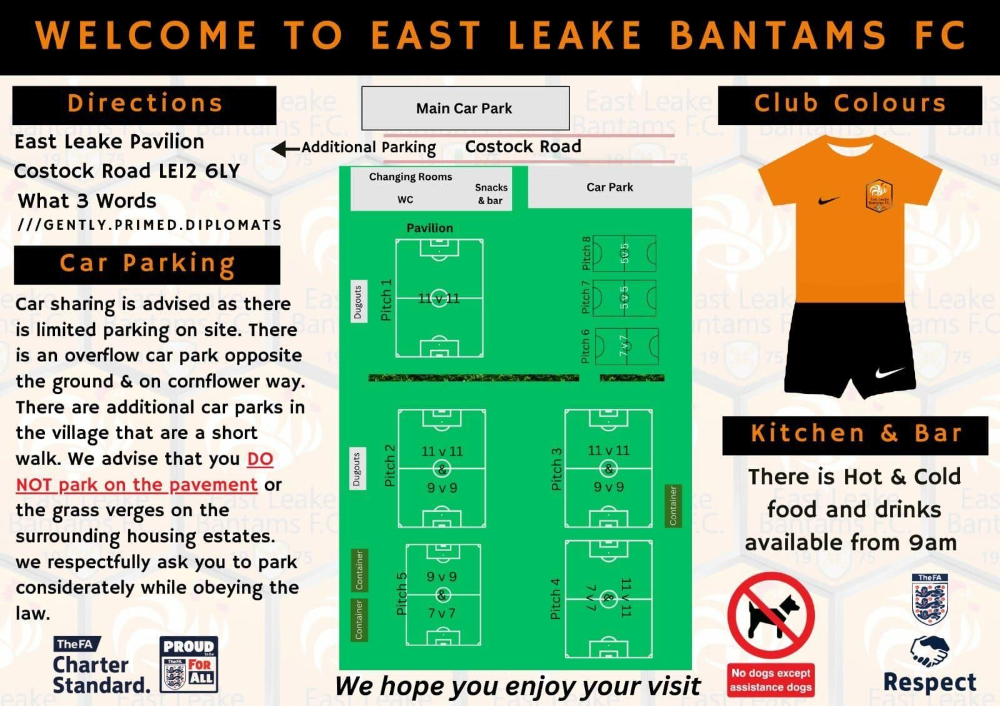

Village Football
Founded in 1975, the Bantams are proud to represent East Leake in local football, bringing the community together every matchday.
Founded in 1975, the Bantams are proud to represent East Leake in local football, bringing the community together every matchday.
More than just a football team — we're a family. From players to supporters, everyone is welcome at the Bantams.
An up-and-coming side with ambitions to climb the local league pyramid while staying true to our grassroots values.
We believe in developing players at every level, giving everyone the chance to improve and enjoy the beautiful game.
Welcome to East Leake Bantams FC — one of East Leake's proudest sporting institutions. Founded in 1975, the club has been at the heart of the village for 50 years, providing football for the local community and representing East Leake in competitive leagues across Nottinghamshire.
From humble beginnings on the playing fields of the village, the Bantams have grown into an ambitious club with a passionate following. Over five decades we have seen generations of families pull on the orange and black, and the club continues to be a focal point for the community — whether that's on a Saturday afternoon matchday or at one of our social events throughout the year.
As we celebrate our 50th anniversary in 2025, we look forward to the next chapter. With a growing squad, dedicated volunteers, and unwavering support from the people of East Leake, the future is bright for the Bantams.
Our flagship side, competing in the local Saturday league. Training Tuesday and Thursday evenings — new players always welcome.
Providing competitive football and a development pathway into the first team. A great environment for players looking to step up.
Still got it? Our vets side keeps the old guard playing well into their twilight years. Slower pace, same passion.
Developing the next generation of Bantams. Age groups from Under 7s through to Under 16s — coaching sessions every weekend.
2025 marks our golden anniversary. Celebrations are planned throughout the year — stay tuned for details on our 50th Anniversary Dinner and special commemorative kit.
Pre-season training kicks off in July. All registered and new players welcome. Sessions held Tuesday and Thursday evenings at the East Leake Pavilion, Costock Road.
Want to support local football? We're looking for kit sponsors, matchday sponsors, and programme advertisers for the 2025–26 season. Get in touch to find out more.
Thinking about getting back into football? The Bantams welcome players of all abilities. Come along to a training session — no commitment needed to try us out.
East Leake Pavilion, Costock Road, East Leake, LE12 6LY.
What3Words: ///gently.primed.diplomats
Car sharing is advised as there is limited parking on site. There is an overflow car park opposite the ground and on Cornflower Way, with additional car parks in the village a short walk away. Please do not park on the pavement or grass verges on the surrounding housing estates.
Orange, white and black — the proud colours of the Bantams. Our Nike home kit features an orange shirt with black shorts.
Hot and cold food and drinks are available from 9am on matchdays. Come down early and enjoy the atmosphere at the Pavilion.
The ground features 8 pitches of various sizes catering for 11v11, 9v9, and 7v7 football — with dugouts, changing rooms and container storage on site.
No dogs are permitted at the ground except assistance dogs. We are an FA Charter Standard and FA Respect club — Proud For All.
